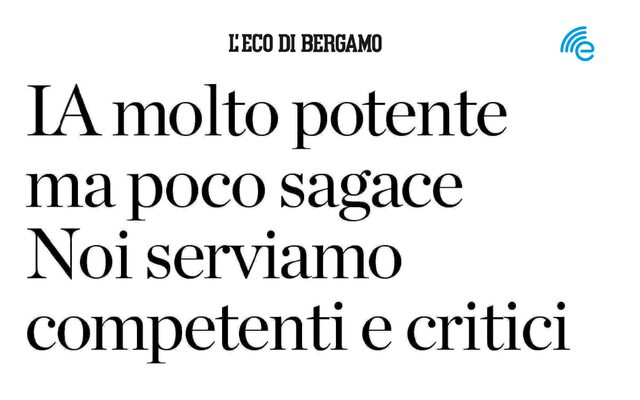

In the Press
Media coverage, interviews, and press mentions. Also available as a verbose version.
2026
-
"Intelligenza artificiale, Stefano Coniglio: «Va governata, la formazione è fondamentale»"
Interview.
-
"Il professor Stefano Coniglio: «Intelligenza artificiale, Bergamo può guidare il futuro»"
Interview.
-
"Dentro l'Intelligenza Artificiale: tra promesse, limiti e realtà"
Live-streamed interview, I venerdì dello Studio BNC (Studio Berta, Nembrini, Colombini e Associati), Bergamo. Archive
2025
-
"Benvenuti in Casa CISL" — Puntata 4: Intelligenza Artificiale
TV interview on AI for work, society, and the future.
-
Festa degli Ingegneri 2025 — "Intelligenza Artificiale: Innovazione Tecnica e Responsabilità Etica"
Event listing for my talk on the historical and technical evolution of AI, Ordine degli Ingegneri della Provincia di Bergamo, Nembro, 6 November 2025.
-
Video interview on AI — Data Analyst per Decisioni Strategiche (DADS)
Interview with Prof. Daniele Toninelli on artificial intelligence for data-driven decisions.
-
Panel "Innovazione e sviluppo del territorio" — XX Congresso Territoriale CISL Bergamo
With Giorgio Gori (MEP), Claudia Terzi (Regione Lombardia), and Maria Paola Esposito (Camera di Commercio Bergamo); moderated by Silvana Galizzi (L'Eco di Bergamo).
-

"IA molto potente ma poco sagace. Noi serviamo competenti e critici"
Interview, Sunday supplement "Intelligente ma non troppo", pp. 18–19. Print edition, available in the L'Eco di Bergamo digital archive.
2024
-
"Quattro Motori d'Europa: Presidenza alla Lombardia"
Coverage of the Four Motors of Europe presidency handover in Stuttgart (12 April 2024), where the University of Bergamo contributed to the discussion on AI as a priority for European inter-regional cooperation.